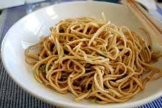

Home

Delicous and Nutritious Garlic Noodles
I am a big fan of noodles in general, but when I came across these garlic
noodles in one of my favorite restaurants I fell in love. They are not
only delicious, but they are very nutritious as well. The garlic kicks off
the recipe very well. I really hope you love this quick and easy recipe.
You can pair it with any type of protein to make a delicious lunch or
dinner.
Ingredients
For the Secret Sauce:
- 2 tablespoons soy sauce
- 1 tablespoon oyster sauce
- 2 teaspoons Worcestershire sauce
- ¼ teaspoon sesame oil
- 1 pinch cayenne pepper
For the noodles
- 4 tablespoons unsalted butter
- 8 cloves garlic, minced
- 6 ounces spaghetti
- ¼ cup finely grated Parmigiano-Reggiano cheese
- 1 tablespoon chopped green onion, or to taste
- 1 pinch red pepper flakes
Steps
-
Gather all ingredients. Stir soy sauce, oyster sauce, Worcestershire
sauce, fish sauce, sesame oil, and cayenne pepper together in a small
bowl for the secret sauce.
-
Melt butter in a skillet over medium heat. Add garlic;
cook and stir just until fragrant, about 1 minute.
Quickly stir in the secret sauce and turn off the heat.
-
Bring a large pot of lightly salted water to a boil. Cook spaghetti in
boiling water, stirring occasionally, until tender yet slightly firm to
the bite, about 12 minutes.
-
Transfer spaghetti into the sauce using tongs, bringing some of the
cooking water with it. Toss until well coated; stir in Parmesan cheese.
Splash in more pasta water if noodles are too dry.
- Plate noodles; garnish with green onions and red pepper flakes.